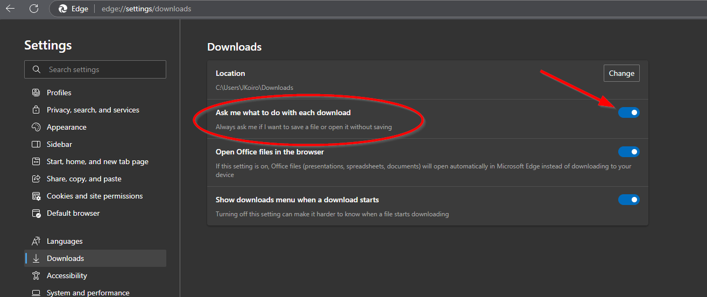
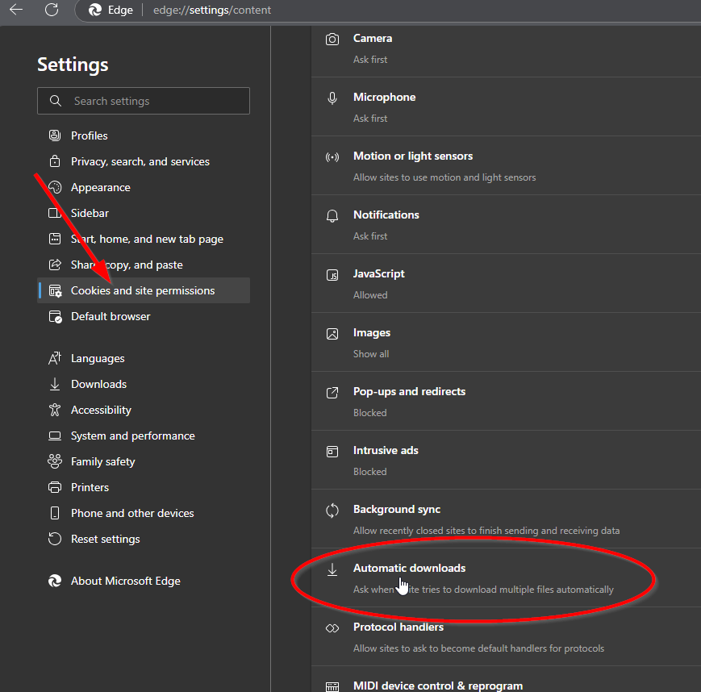
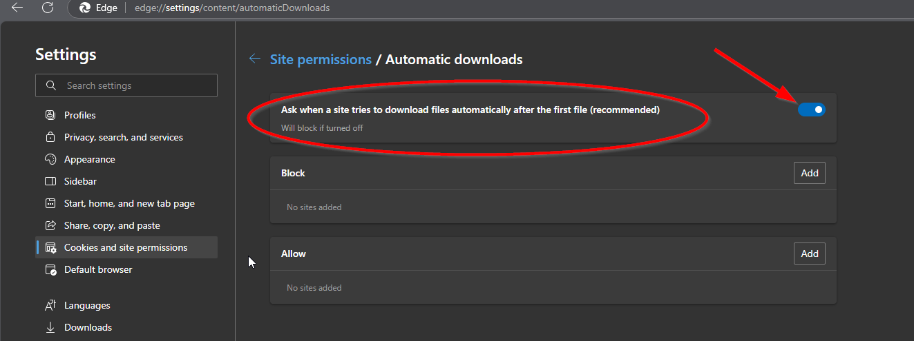
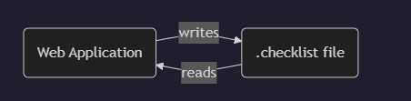
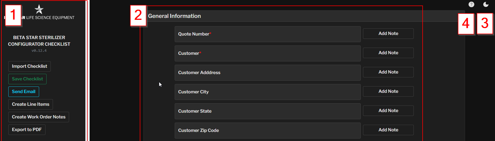
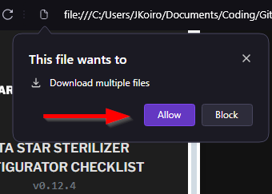
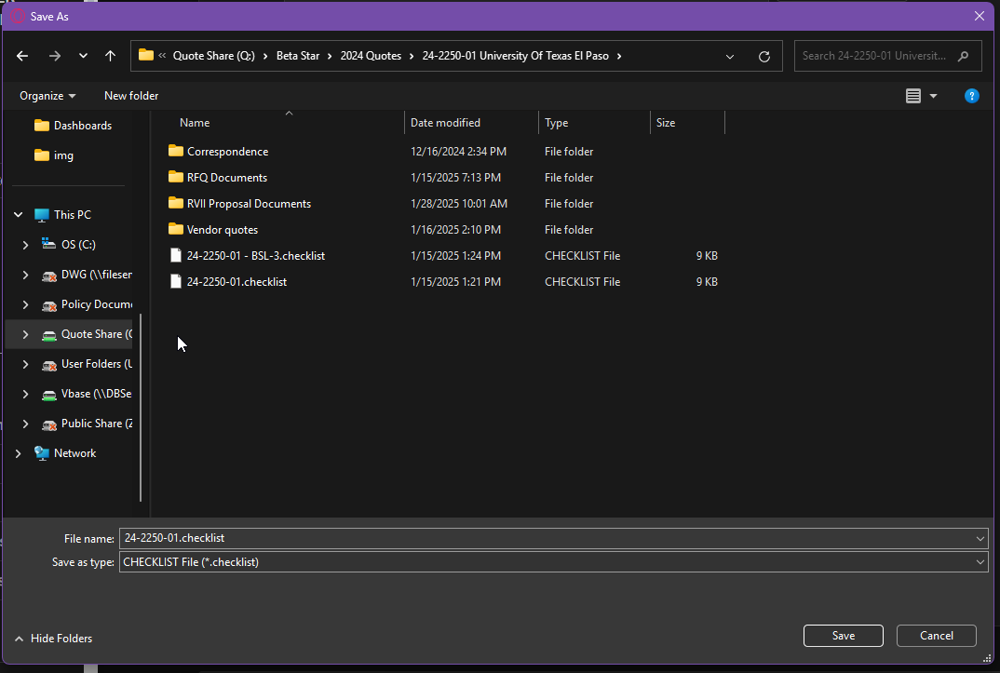
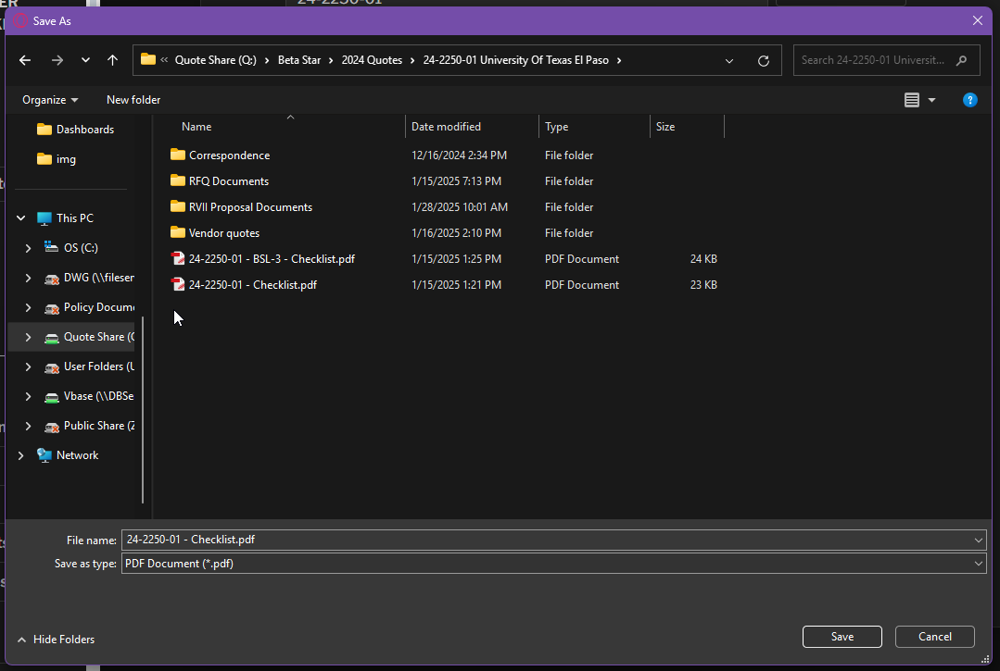
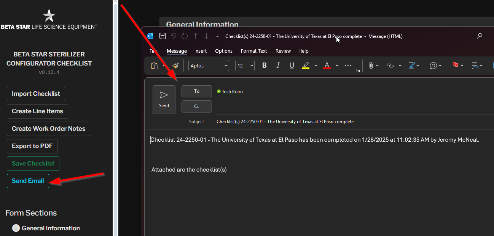

Notes are automatically included in exports for estimator and work order documentation.
Notes are automatically included in exports for estimator and work order documentation.Make sure that you are using Microsoft Edge or Google Chrome for minimizing potential issues with the configurator application. While other browsers will work as well, some of the settings required to make the configurator work most effectively may not be available.
Please set the following settings in your browser to ensure that saving the .checklist file works properly.
Make sure to configure the browser to always ask where to save a file that is being downloaded. This can be done by going into your browser settings under Downloads. Make sure the setting Ask where to save each file before downloading is turned on.

Use this link if you are using Edge: edge://settings/downloads
Use this link if you are using Chrome: chrome://settings/downloads
Optionaly, you may also enable downloading multiple files as this will allow you to save the .checklist file and the .pdf file when saving.
This is found under the Cookies and site permissions and Automatic Downloads

After clicking on Automatic Downloads make sure the setting for Ask when a site tried to download files automatically after the first file is turned on.

Use this link if you are using Edge: edge://settings/content/automaticDownloads
Use this link if you are using Chrome: chrome://settings/content/automaticDownloads
The Beta Star Sterilizer Configurator is a web-based tool that helps you configure and document sterilizer specifications. This guide will walk you through its features and best practices.
The structure of the new checklist is that of an application and save-file as shown in the diagram below:

The .checklist files are stored on the quote drive in the appropriate quote folder for the project. These files and saved and opened by the web application (configurator) that is stored under the /Beta Star Checklists sub-folder of the Beta Star folder.
Best practice would suggest that you create a shortcut to this file on your desktop. This will allow you to always be able to open the latest configurator file. Do not copy the file as updates will not persist to the copied version.

Each field has an "Add Note" button on the right
Click to expand a text area where you can add specific comments or details
Notes are automatically included in exports for estimator and work order documentation.
The configurator allows you to designate certain items as optional features for the sales proposal, rather than including them in the base price.
To mark items as options:

Optional items appear under "Additional Options" in the Line Items report instead of the selected items section.

To save your configuration:

Choose a location to save the file (e.g., quote folder or desktop to attach to email later)

After saving the .checklist file, a second dialog will appear confirming where you would like to save the .pdf version of the checklist. Good practice would suggest to place it in the same location as the .checklist file.

You can load an existing checklist in two ways:
For clear organization, especially with multiple units, use this format:
[quote number] - [machine size/equipment number].checklist
Examples:
24-9999-01 - LSII202038.checklist
24-9999-01 - 262639.checklist
or:
24-9999-01 - EQ1.2.checklist
24-9999-01 - EQ1.3.checklist

If you encounter issues: